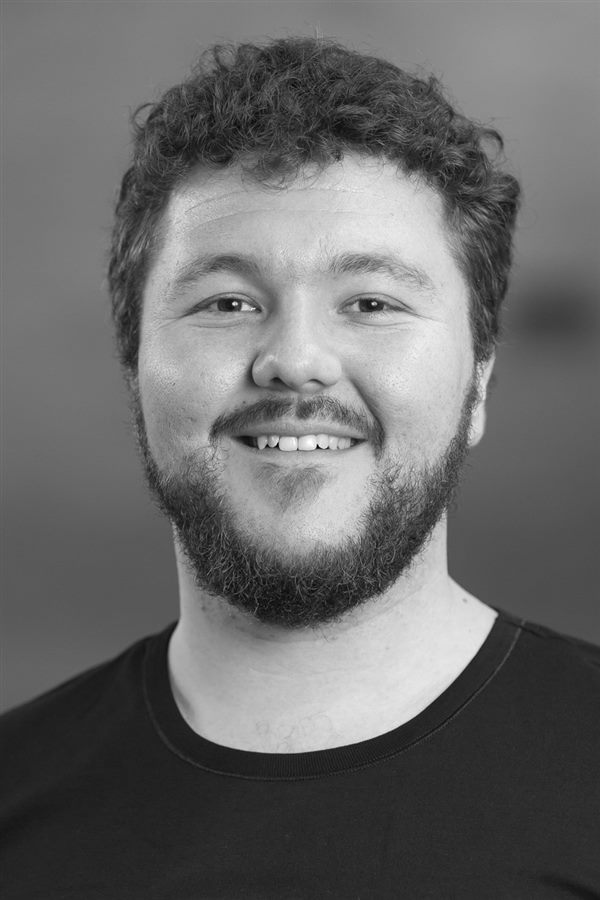

I lead teams to build systems that scale | Cyber security, technology and risk leadership | Melbourne
I help organisations build and lead effective technology teams, including those that need to move faster and manage risk. I have 15 years in cybersecurity and more than a decade leading teams. I have inherited a small, under-resourced function and secured consensus to transform it to achieve more at three organisations.
If you want to move faster in delivery while managing risk, you don't need another report, you need confidence in your operating model. I offer vCISO and cybersecurity advisory, technology organisational design and risk culture advisory services to help you build the capability in your team to do that, ideally so that you no longer need my support.
My model enables teams with clarity and process: clarity enables people to focus and anticipate risk, and processes scale where people cannot. I empower leaders to get their teams engaged in managing complexity together using scalable processes. My models receive great feedback from staff and stakeholders. I've led cyber security, IT and platform functions at Monash Health, HotDoc and MessageMedia, and consulted into a neobank, MYOB and Telstra before that, and would love to work with technology, healthcare or other high-impact organisations.
Outside of work I run tabletop role-playing games, help organise large-scale live-action megagames, and lead a community music theatre organisation.
Fractional CISO leadership and engagement-based cybersecurity advisory.
View services → Org Design & Culture ConsultingHelping build high performing organisations that deliver fast and manage risk.
View services →